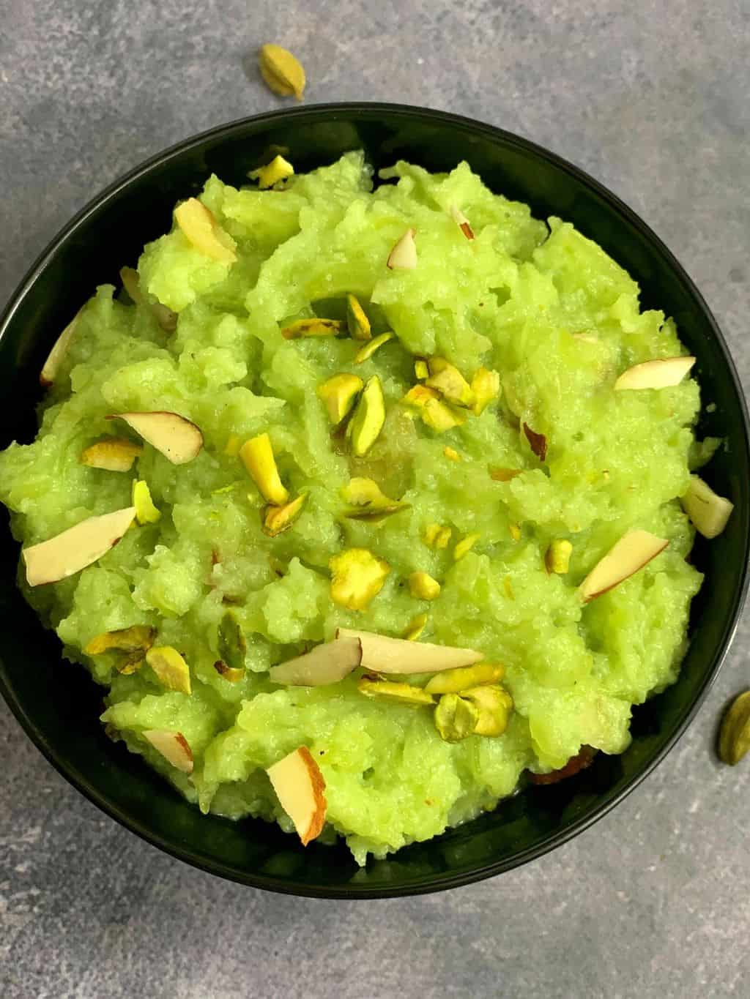

Lauki Halwa

Description
If lauki is not one of your favourite vegetables, then it will become one with this dessert recipe. You can make it as a standalone recipe as well and enjoy the halwa. To give it a crispy texture, we have filled the halwa in tarts and then served them. Garnish with more nuts like cashews, almonds and raisins before serving. Be it kids or adults, everyone will love this recipe for sure. Do try this recipe, rate it and let us know how it turned out to be by leaving a comment in the section below.
Ingredients
- 500 gm bottle gourd
- 150 gm sugar
- 1/4 teaspoon powdered green cardamom
- 15 gm cashews
- 200 gm ghee
- 200 gm khoya
- 15 gm almonds
- 4 pastry shells
Steps
- Prepare the bottle gourd
- Saute the grated lauki
- Add sugar and sauté till the lauki halwa turns thick. Now add Khoya and keep stirring to avoid burning. Switch off the flame now.
- Add roughly chopped nuts and cardamom powder to the halwa. Mix well.
- Take readymade tart shell, fill them with the halwa, garnish with more nuts and serve hot. Enjoy!